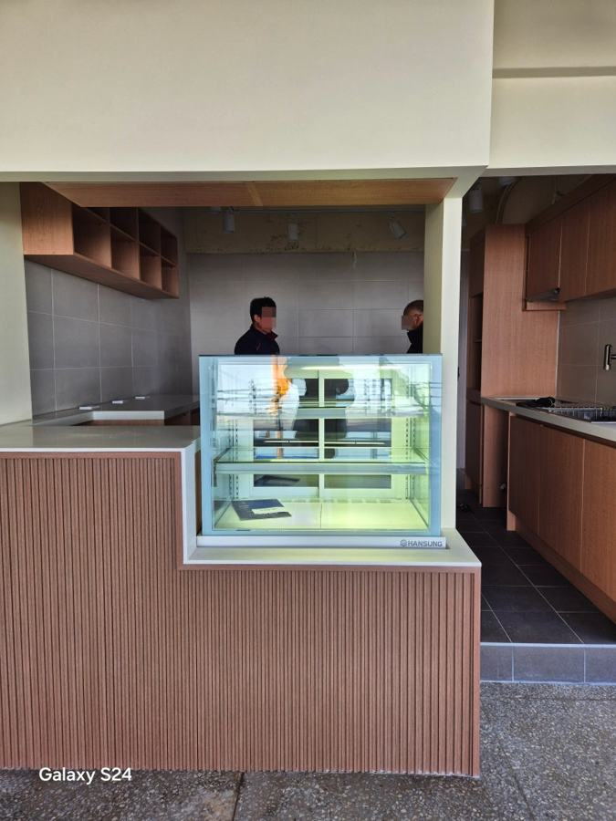
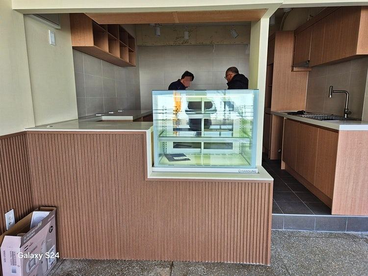
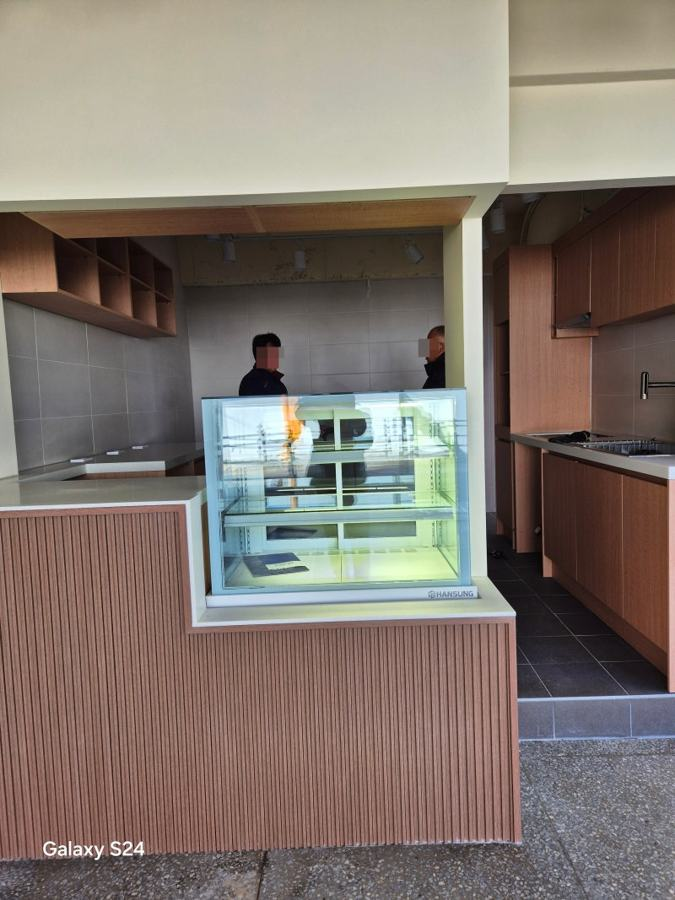
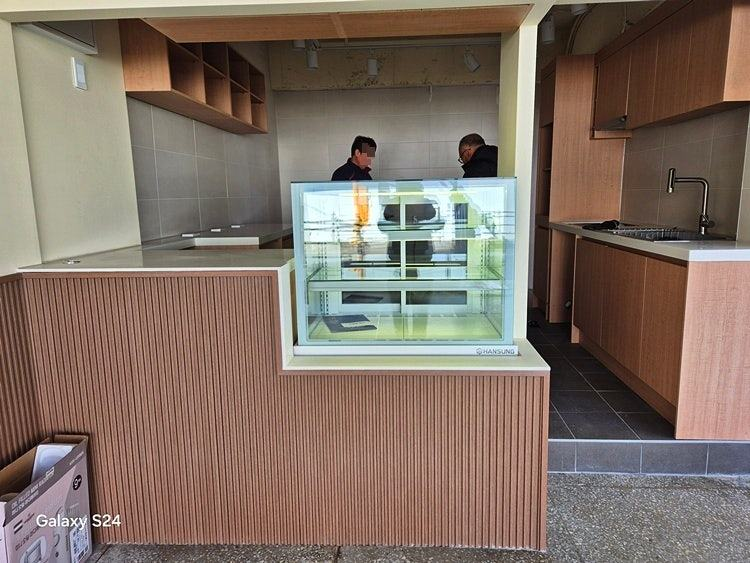
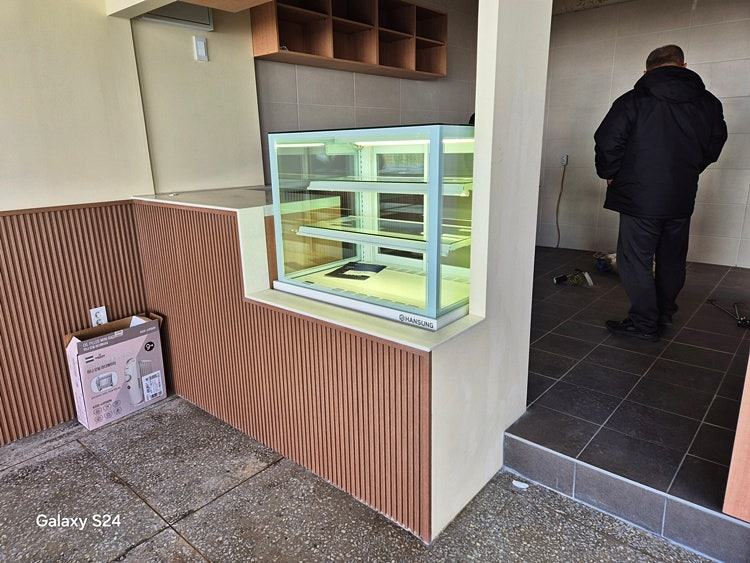
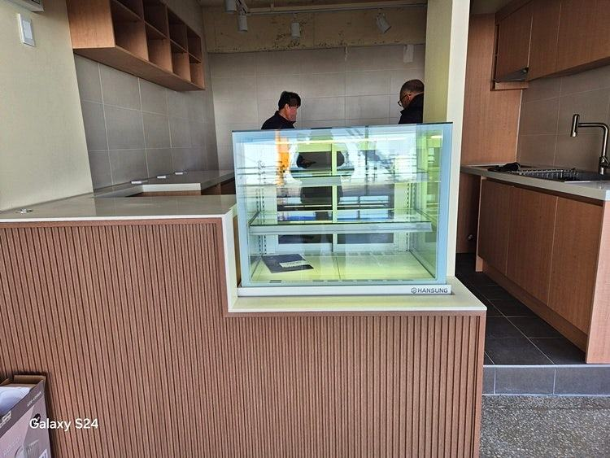
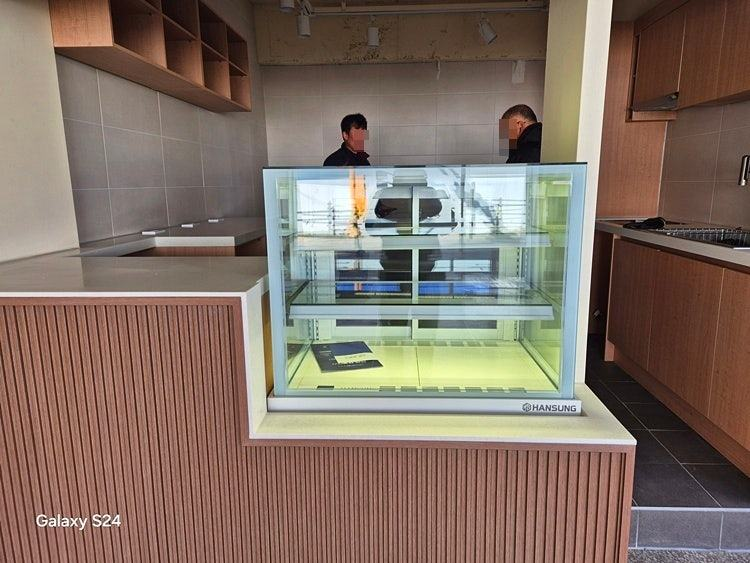
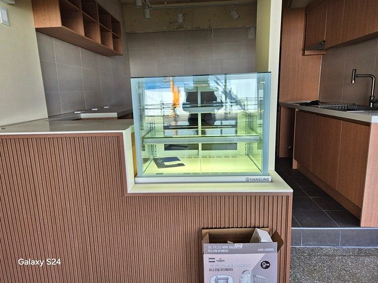
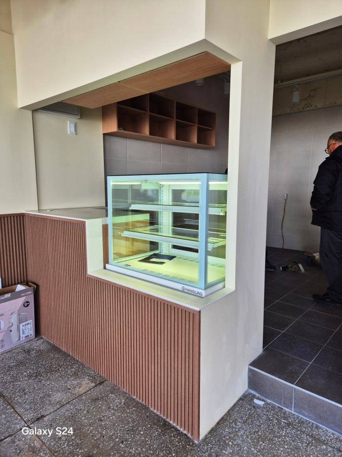
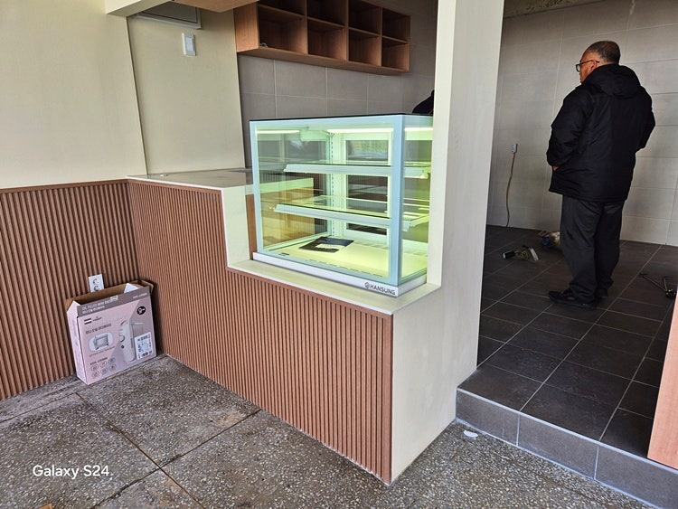

한성제품
냉장쇼케이스 가격, 견적서에서 금액을 가르는 항목 정리

냉장쇼케이스 가격은 규격 하나로 정해지지 않고 냉각 방식, 문 구조, 유리와 결로 방지 사양, 조명·선반 같은 옵션이 합쳐져 결정됩니다. 견적을 비교할 때는 같은 항목끼리 맞춰 놓고 보고, 설치 후 매달 나가는 전기요금까지 함께 따져 보셔야 실제 부담을 알 수 있습니다.
안녕하세요. 매장 크기에 맞춰 냉장쇼케이스를 직접 만드는 한성쇼케이스입니다.
견적을 두세 군데 받아 본 사장님들이 공통으로 하시는 말씀이 있습니다. "비슷한 크기인데 왜 업체마다 금액이 이렇게 다른가요?"
견적서에 적힌 숫자만 보면 싼 쪽이 이득 같지만, 들여다보면 빠진 항목이 있거나 냉각 방식이 다른 경우가 대부분입니다.
오늘은 냉장쇼케이스 견적서에서 금액을 실제로 가르는 항목과, 비교할 때 놓치기 쉬운 부분을 순서대로 짚어 드리겠습니다.
1. 규격과 진열 구조
가장 먼저 금액에 영향을 주는 건 가로 길이와 깊이, 높이입니다. 다만 같은 길이라도 내부를 몇 단으로 나누는지, 선반을 유리로 할지 타공 선반으로 할지에 따라 들어가는 자재와 작업이 달라집니다.
기성 규격에 가까울수록 제작이 단순하고, 기둥이나 벽 사이에 딱 맞춰 넣어야 하는 경우처럼 치수를 세밀하게 조정할수록 손이 더 갑니다.
그렇다고 남는 공간을 그대로 두면 틈새에 먼지가 쌓이고 진열 면적도 손해를 봅니다.
- 설치 자리의 폭·깊이·높이를 실측해 두세요.
- 진열할 상품의 높이를 재서 필요한 단수를 정해 두세요.
- 선반 종류(유리, 타공)를 견적서에 적어 달라고 하세요.
2. 냉각 방식과 콤프레셔
견적 차이가 가장 크게 나는 부분입니다. 팬으로 냉기를 돌리는 간냉식은 선반 위치에 따른 온도 차가 적고 유리에 성에가 덜 끼는 대신 구조가 복잡합니다.
직냉식은 구조가 단순한 만큼 금액 부담이 덜하지만 성에 관리가 필요합니다.
콤프레셔도 꼭 확인할 항목입니다. 쇼케이스는 하루 종일 쉬지 않고 돌아가기 때문에 콤프레셔 성능이 수명과 고장 빈도를 좌우합니다.
한성쇼케이스는 유럽제와 삼성 냉각 콤프를 사용하고 있으며, 견적서에 어떤 콤프가 들어가는지 적혀 있는지 보시길 권합니다.


3. 문 구조와 유리 사양
손님이 직접 꺼내는 앞문형, 직원이 뒤에서 꺼내 주는 뒷문형, 양쪽 모두 여는 양문형 중 무엇을 고르느냐에 따라 도어 프레임과 경첩, 레일 구성이 달라집니다.
매장 운영 방식에 맞지 않는 문을 고르면 나중에 바꾸기 어렵습니다.
유리 사양도 금액을 가릅니다. 습한 매장에서는 결로 방지 열선이 들어간 유리가 있어야 진열 상품이 김에 가려지지 않습니다.
곡선 유리나 사선 유리처럼 모양을 넣으면 가공이 추가됩니다.
- 앞문·뒷문·양문 중 어떤 구조인지 확인하세요.
- 결로 방지 열선 유리가 포함됐는지 보세요.
4. 외관 마감과 옵션
프레임 색상, 스텐이나 우드 같은 마감 소재, 조명 색, 상단 로고 각인, 영업 후 덮는 나이트커버 등은 모두 선택 옵션입니다.
견적서 하나에는 포함돼 있고 다른 하나에는 빠져 있는 경우가 많아, 총액만 보면 비교가 어긋납니다.
반입 경로와 설치 조건도 미리 알려 주셔야 합니다. 출입문이 좁거나 계단으로 옮겨야 하면 분리 제작이나 추가 인력이 필요할 수 있습니다.
본사가 자재를 대량으로 매입해 제작하기 때문에, 필요한 옵션을 정확히 말씀해 주시면 불필요한 항목을 덜어 낸 구성으로 안내해 드립니다.
체크리스트
- 설치 자리 실측 치수와 출입문 폭
- 간냉식·직냉식과 콤프레셔 종류
- 문 구조와 결로 방지 유리 포함 여부
- 조명·선반·나이트커버 등 옵션 목록
- 반입·설치 조건과 A/S 범위
현장에서 자주 보는 경우: 싸게 샀는데 전기요금이 더 나올 때
구입 금액만 보고 고른 뒤, 여름 고지서를 받고 나서야 문의를 주시는 사장님이 적지 않습니다. 매장에 가 보면 원인은 대개 비슷합니다.
설정 온도를 습관처럼 가장 낮게 맞춰 두었거나, 에스프레소 머신 옆이나 햇빛이 드는 자리에 놓여 있거나, 뒷면이 벽에 붙어 열이 빠지지 못하는 경우입니다.
음료 위주로 진열한다면 보통 2~7도 사이에서 운용하는 경우가 많은데, 이보다 과하게 낮추면 냉각 시간이 길어져 전기 사용이 늘어납니다.
습하지 않은 매장인데 도어 히터를 늘 최고 단계로 쓰거나, 멀티탭 하나에 장비 여러 대를 물려 쓰는 것도 자주 보는 모습입니다.
견적을 받을 때 설치 자리와 전원 조건까지 같이 상의하시면 이런 비용을 처음부터 줄일 수 있습니다.









자주 묻는 질문
견적서 두 장의 금액 차이가 큰데 무엇부터 비교해야 하나요?
냉각 방식과 콤프레셔, 문 구조, 유리 사양을 먼저 같은 조건으로 맞춰 보세요. 그다음 조명이나 나이트커버 같은 옵션이 각각 포함됐는지 확인하면 차이가 어디서 나는지 보입니다.
기성품과 맞춤 제작은 어느 쪽이 부담이 덜한가요?
매장 자리가 기성 규격과 맞는다면 기성품이 단순할 수 있습니다. 자리가 애매해 틈이 생기거나 진열 면적이 모자란다면, 맞춤 제작으로 공간을 다 쓰는 편이 길게 보면 낫습니다.
설치 후 고장이 나면 어디서 수리받나요?
한성쇼케이스는 전국 240여 개 A/S 센터를 운영하고 있습니다. 지방 매장도 가까운 센터를 통해 접수하실 수 있으니, 견적 단계에서 A/S 범위를 함께 확인해 보세요.
매장 조건에 맞춰 만드는 한성쇼케이스
원하시는 제품 사진과 설치할 공간 사진만 보내 주셔도 매장에 맞는 구성을 추천해 드립니다.
- 전국 240여 개 A/S 전담 센터 운영
- 본사 대량 자재 매입으로 품질 대비 합리적인 가격
- 유럽제·삼성 냉각 콤프레셔 적용
- 국내 최초 쇼케이스 전문 디자이너 상주
매장 폭과 원하는 진열 구성을 알려 주세요. 실측과 견적을 안내해 드립니다.
031-986-2458